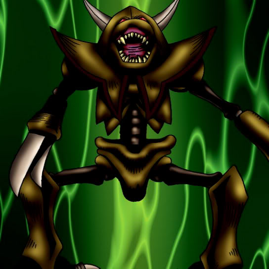

Man-Eater Bug

Description: "Destroys opposing enemy when this card is flipped face-up in battle."
STATS
ATK: 450
DEF: 600DECK COST
Deck Cost per Card: 16EFFECT NOT IMPLEMENTED
Fusion List (5 Possible Fusions)
- Man-Eater Bug + Armed Ninja = Cockroach Knight
- Man-Eater Bug + Bone Mouse = Wood Remains
- Man-Eater Bug + Greenkappa = Cockroach Knight
- Man-Eater Bug + Masked Clown = Cockroach Knight
- Man-Eater Bug + Mechaleon = Snakeyashi